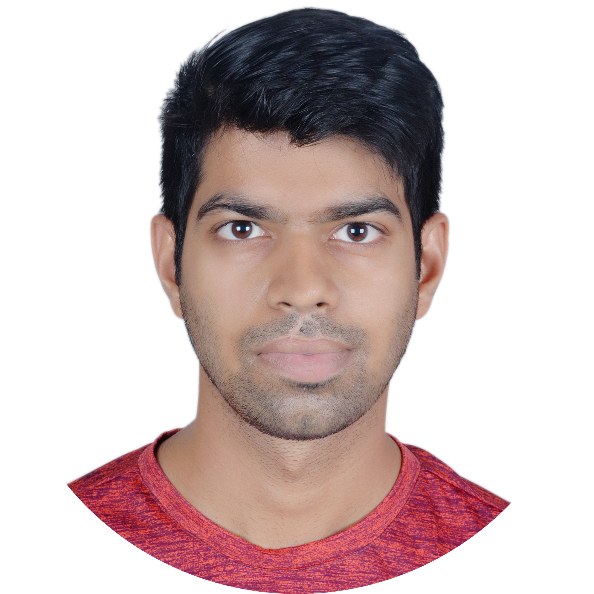

Rajat Saxena, Ph.D.
Postdoctoral Fellow,
Kavli Institute for Systems Neuroscience, NTNU
Google Scholar , rajat.saxena@ntnu.no
Hello! I am Rajat, a systems neuroscience postdoctoral research fellow at the Kavli Institute for Systems Neuroscience (KISN), located in Trondheim, Norway.
My research focuses on understanding continual learning and memory consolidation in the brain. I’m particularly interested in topics such as overcoming catastrophic forgetting, forward knowledge transfer,
generalization, and hippocampus-cortex interactions across different timescales. To investigate these questions, I use a combination of high-density silicon probe recordings, two-photon imaging, and deep-learning models.
I recently joined the Moser group to study mechanisms underlying theta sweeps.
This work aims to uncover how hippocampus-entorhinal cortex-thalamic circuits interact to enable rapid and flexible memory encoding.
I am a graduate of the neurobiology & behavior department at the University of California, Irvine, where I worked with Dr. Bruce McNaughton.
During graduate school, I studied various properties of continual-learning systems—both biological and artificial—including overcoming catastrophic forgetting and enabling forward knowledge transfer. I developed a
neuro-inspired deep learning algorithm that allows for rapid and data-efficient learning of new information. Additionally, I conducted experiments to
determine whether similar principles apply to rodent brains. I also ran experiments to explore how enriched experiences can enhance behavior and improve brain function. As part of this work, I wrote a
review paper discussing how to bridge gaps between AI models and neuroscience. During my graduate studies, I spent a summer working remotely on developing a single-unit
classifier for Kilosort spike sorting algorithm, working with Dr. Marius Pachitariu.
Before joining UC Irvine, I was a Research Assistant at the Indian Institute of Science, Bangalore, in Dr. Sachin Deshmukh’s lab, where I studied the neural
correlates of spatial navigation and memory. During this time, I developed camera systems for tracking rodents in large spaces. I earned
my bachelor’s degree in Information Systems from BITS Pilani Hyderabad Campus, India, in 2015.
Outside of research, I enjoy playing soccer, salsa dancing, rock climbing, kendo, watching TV shows/anime, and playing electric guitar.
I love discussions on almost everything related to engineering, philosophy, and design.
Publications
Bridging Neuroscience and AI: Environmental Enrichment as a Model for Forward Knowledge Transfer.
R Saxena, BL McNaughton.
arXiv 2024
Learning in deep neural networks and brains with similarity weighted interleaved learning.
R Saxena, JL Shobe, BL McNaughton.
PNAS 2022.
Route selection with a cognitive map.
McNaughton BL, R Saxena.
Neuron 2022. Preview article
Inexpensive, scalable camera system for tracking rat behavior in large spaces.
R Saxena, W Barde, SS Deshmukh.
Journal of Neurophysiology 2018
Education
BITS Pilani Hyderabad Campus M.Sc.(Tech.), Information Systems, 2015
University of California, Irvine M.S., Biological Sciences, 2021
University of California, Irvine Ph.D., Neuroscience, 2024, thesis: Continual learning in the brain
Invited Talks and Conference Presentations
- 2024 Cognitive Sciences, UC Irvine: Emergence of structured learning and its influence on new item learning
- 2023 Shiv Nadar University, India: Exposure to multiple prior experiences accelerates new item learning by altering population coding dynamics [Online]
- 2022 ContinualAI: Rapid learning of new items with similarity-weighted interleaved learning [Online]. video
- 2020 SCGB Spike sorting workshop: Waveform classifier for automated spike sorting [Online]
- 2019 Center for Neuroscience, IISC Bangalore: Modulation of the neocortex by the hippocampus output
- 2024 International Sleep Replay Workshop: Sparking smarter brains: neural correlates of environmental enrichment [Online]
- 2024 SfN Neuroscience meeting: Hippocampus-Neocortex interaction at theta timescale
- 2023 SfN Neuroscience meeting: Exposure to obstacle course enrichment alters population coding and functional monosynaptic circuits in neocortex
- 2023 BRAIN Initiative annual meeting: Exposure to multiple prior experiences accelerates new item learning by altering population coding dynamics
- 2023 LearnMem Conference: Environmental enrichment increases population sparsity and alters functional synaptic connectivity
- 2022 Sfn Neuroscience: Rapid learning of new information using Similarity-Weighted Interleaved Learning (SWIL)
- 2020 Neuromatch Conference: Rapid integration of new information in the brain
- 2017 Sfn Neuroscience: Cheap, scalable camera system for tracking rat behavior in large spaces
Teaching and Mentoring
- Summer 2021-22: Lead TA, Neuromatch Academy Summer School for deep learning
- Fall 2021: Course TA, Graduate course in Cellular Neuroscience, UC Irvine [Instructors: Drs. Ian Parker & Gyuri Lur]
- Summer 2020: Course TA, Neuromatch Academy Summer School for computational neuroscience
- Fall 2019: Course TA, Brain and Behavior, UC Irvine [Instructor: Dr. Audrey Lew]
- Spring 2019: Course TA, DNA to Organisms, UC Irvine [Instructors: Drs. Marcelo Wood, Kim Green, & Jorge Busciglio]
- Winter 2019: Course TA, Neurobiology lab, UC Irvine [Instructor: Dr. Audrey Lew]
- Winter 2015: Course TA, R for Data Mining, BITS Pilani Hyderabad Campus [Instructor: Dr. NL Bhanumurthy]
- Spring 2014: Lead TA, Introduction to Python, BITS Pilani Hyderabad Campus
- 2018-2024: Mentored fourteen undergraduate students to perform neuroscience research at UC Irvine [12/14 female/non-binary/under-represented minorities]
- 2015-2018: Mentored and managed five undergraduate students to perform neuroscience research at Indian Institute of Science, Bangalore [4/5 females]
Honors and Awards
- 2024 UCI Associate of Graduate Students (AGS) Travel award
- 2023 Society for Neuroscience Trainee Professional Development Award (TPDA)
- 2022 UCI James L. McGaugh Award for best paper in an academic year
- 2022 Best Research Talk in Biological Sciences, UCI AGS symposium
- 2022 UCI CNLM Jared M. Roberts Memorial Award
- 2017 Indian Institute of Science Bangalore Travel Award
- 2013 Google Student Ambassador selected to represent the BITS Pilani University
Advanced courses and workshops
- 2023 MBL Methods in Computational Neuroscience, MBL WoodsHole, USA
- 2021 Neuropixels Workshop, Allen Institute, USA
- 2020 SCGB Spike Sorting Workshop, Simons Institute
- 2019 Learning to use Kilosort2 and suite2p, Janelia Research Farms, Virginia, USA
- 2016 Computational Approach to Memory and Plasticity, NCBS, Bangalore, India
- 2015 MIT KumbaThon, Nashik, India
- 2014 MIT Media Lab India Initiative, DIY workshop
Email: rajat.saxena@ntnu.no
Bluesky: @rajatsxn.bsky.social
Github: rajatsaxena
Rajat Saxena
<
rajat.saxena@ntnu.no>
Last modified: 3/25.
Thank you to Sarah Harvey for the website format.